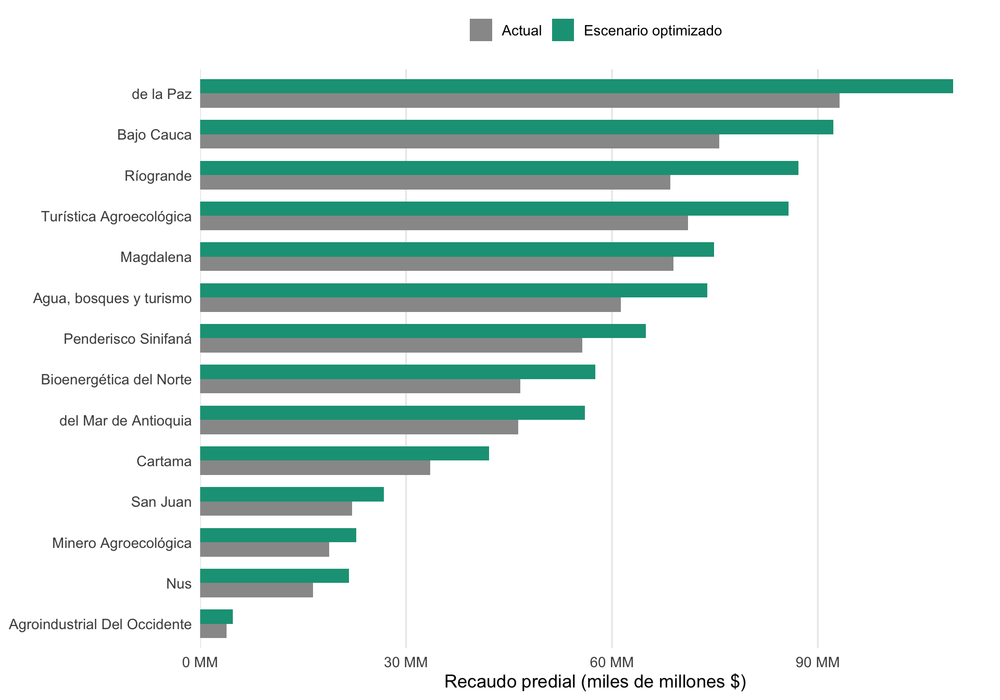
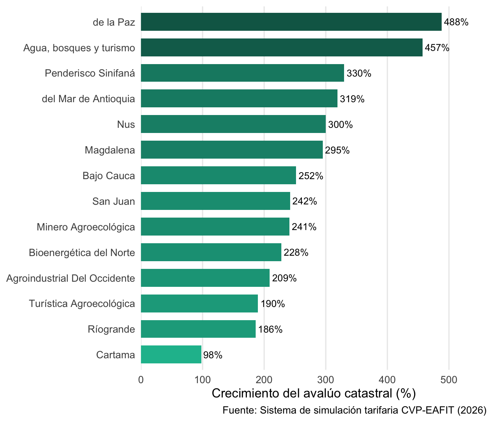
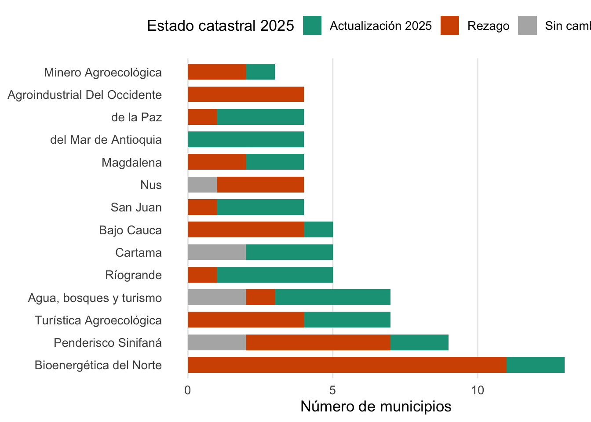

Gestoría Catastral
La oportunidad fiscal de la actualización catastral para las provincias
El contexto: actualización catastral sin precedentes
Colombia atraviesa el proceso de actualización catastral más ambicioso de su historia. Al 2025, el 26.8% del territorio nacional ha sido actualizado con catastro multipropósito (Instituto Geográfico Agustín Codazzi, 2025). En Antioquia, 88 municipios están en diferentes etapas de actualización, con efectos directos sobre los avalúos y el recaudo del impuesto predial.
Para las PAPs, esto representa una doble oportunidad:
- Fiscal: La actualización incrementa los avalúos y puede aumentar significativamente el recaudo predial
- Institucional: Las PAPs pueden habilitarse como gestores catastrales (Instituto Geográfico Agustín Codazzi, 2023), generando economías de escala
La oportunidad fiscal por provincia
| Provincia | Municipios | Predios | Avalúo 2024 (MM) | Avalúo 2026 (MM) | Crecimiento avalúo | Recaudo actual (M) | Esc. optimizado (M) | Incremento |
|---|---|---|---|---|---|---|---|---|
| Ríogrande | 5 | 51,197 | 2,823.8 | 8,072.9 | 186% | 68,520 | 87,195 | +27.3% |
| Bajo Cauca | 5 | 87,895 | 1,894.6 | 6,663.7 | 252% | 75,654 | 92,232 | +21.9% |
| de la Paz | 4 | 66,278 | 1,344.0 | 7,898.6 | 488% | 93,167 | 109,733 | +17.8% |
| Turística Agroecológica | 7 | 57,651 | 2,561.9 | 7,437.0 | 190% | 71,109 | 85,737 | +20.6% |
| Agua, bosques y turismo | 7 | 52,747 | 1,574.8 | 8,768.2 | 457% | 61,313 | 73,866 | +20.5% |
| Bioenergética del Norte | 13 | 69,990 | 1,568.2 | 5,147.9 | 228% | 46,675 | 57,582 | +23.4% |
| del Mar de Antioquia | 4 | 61,186 | 1,046.4 | 4,381.8 | 319% | 46,358 | 56,021 | +20.8% |
| Penderisco Sinifaná | 9 | 49,597 | 1,228.6 | 5,283.3 | 330% | 55,670 | 64,932 | +16.6% |
| Cartama | 5 | 24,556 | 2,143.3 | 4,243.7 | 98% | 33,491 | 42,102 | +25.7% |
| Magdalena | 4 | 37,874 | 1,527.2 | 6,029.3 | 295% | 68,974 | 74,852 | +8.5% |
| Nus | 4 | 24,398 | 466.7 | 1,865.8 | 300% | 16,480 | 21,719 | +31.8% |
| San Juan | 4 | 23,371 | 643.8 | 2,201.8 | 242% | 22,151 | 26,789 | +20.9% |
| Minero Agroecológica | 3 | 24,608 | 588.2 | 2,003.9 | 241% | 18,820 | 22,759 | +20.9% |
| Agroindustrial Del Occidente | 4 | 16,323 | 152.2 | 470.0 | 209% | 3,825 | 4,740 | +23.9% |
Nota metodológica
Los escenarios de optimización tarifaria provienen del sistema de simulación desarrollado por el CVP-EAFIT para 88 municipios de Antioquia. El escenario optimizado corresponde al escenario “ambicioso” (municipios T3) o “progresivo” (municipios T2 con actualización completa), que maximiza el recaudo respetando las restricciones legales de crecimiento (alpha).
Crecimiento de avalúos por provincia

Los avalúos catastrales crecen entre un 98% y un 488% dependiendo de la provincia. Este crecimiento refleja la brecha entre los avalúos desactualizados (algunos con más de 10 años sin revisión) y los valores de mercado actuales.
La magnitud del crecimiento depende de:
- Antigüedad del catastro: Municipios con más de 10 años sin actualización presentan las mayores brechas
- Dinámica inmobiliaria: Zonas con desarrollo reciente muestran mayor diferencia entre avalúo y valor comercial
- Tipo de predio: Los predios rurales suelen tener las mayores brechas relativas
El impacto diferencial por tipo de municipio

Los municipios se clasifican en tres tipos según su estado catastral:
- Actualización 2025: Municipios que están siendo actualizados en 2025 — enfrentan el mayor impacto en avalúos
- Sin cambio: Municipios actualizados recientemente o sin modificación programada
- Rezago: Municipios con catastro desactualizado pendiente de actualización
La distribución muestra que la mayoría de las PAPs tienen una mezcla de estados catastrales, lo que genera retos de coordinación: municipios actualizados compiten con vecinos que aún tienen avalúos artificialmente bajos.
La oportunidad institucional: habilitación como gestor catastral
Más allá del impacto fiscal, la actualización catastral abre una ventana para que las PAPs se posicionen como gestores catastrales, asumiendo una competencia que:
- Genera economías de escala: Un solo equipo técnico puede atender los municipios de la provincia, en lugar de que cada municipio pequeño intente (y fracase) habilitarse individualmente
- Tiene precedente jurídico: El Área Metropolitana de Barranquilla fue habilitada como primer EAT gestor catastral en 2024 (Área Metropolitana de Barranquilla, 2024)
- Cuenta con marco regulatorio: La Resolución 1040/2023 (Instituto Geográfico Agustín Codazzi, 2023) y su modificatoria 746/2024 (Instituto Geográfico Agustín Codazzi, 2024) definen requisitos claros
Requisitos de habilitación
| Dimensión | Requisito | Reto para las PAPs |
|---|---|---|
| Técnico | Personal en topografía, SIG, valuación | Escasez de talento en municipios cat. 5-6 |
| Tecnológico | Plataforma LADM_COL, conectividad | Inversión significativa en infraestructura |
| Administrativo | Estructura organizacional dedicada | Requiere fortalecimiento institucional |
| Financiero | Sostenibilidad demostrada | Depende del recaudo predial mejorado |
| Talento humano | Perfiles específicos certificados | Competencia con sector privado |
Modelo de sostenibilidad
flowchart LR
A["PAP se habilita<br/>como gestor"] --> B["Actualiza catastro<br/>de sus municipios"]
B --> C["Avalúos reflejan<br/>valores reales"]
C --> D["Recaudo predial<br/>aumenta"]
D --> E["Municipios fortalecen<br/>finanzas"]
E --> F["PAP sostiene<br/>operación catastral"]
F --> A
style A fill:#16A085,color:#fff,stroke:#0E6655
style B fill:#1ABC9C,color:#fff,stroke:#16A085
style C fill:#1ABC9C,color:#fff,stroke:#16A085
style D fill:#16A085,color:#fff,stroke:#0E6655
style E fill:#0E6655,color:#fff,stroke:#0E6655
style F fill:#0E6655,color:#fff,stroke:#0E6655
Detalle por municipio
| Provincia | Municipio | Cat | Predios | Avalúo 2024 (M) | Avalúo 2026 (M) | Crec. | Recaudo actual (M) |
|---|---|---|---|---|---|---|---|
| Bioenergética del Norte | Angostura | 6 | 5,330 | 110,212 | 249,366 | 126% | 2,925 |
| Bioenergética del Norte | Anorí | 6 | 6,463 | 127,751 | 418,507 | 228% | 3,569 |
| Bioenergética del Norte | Briceño | 6 | 3,232 | 29,484 | 87,012 | 195% | 801 |
| Bioenergética del Norte | Campamento | 6 | 3,838 | 40,142 | 128,119 | 219% | 742 |
| Bioenergética del Norte | Carolina | 6 | 2,632 | 61,774 | 303,424 | 391% | 2,195 |
| Bioenergética del Norte | Guadalupe | 6 | 3,478 | 82,316 | 253,574 | 208% | 2,712 |
| Bioenergética del Norte | Gómez Plata | 6 | 5,760 | 264,704 | 539,144 | 104% | 2,798 |
| Bioenergética del Norte | Ituango | 6 | 8,813 | 156,951 | 658,673 | 320% | 4,764 |
| Bioenergética del Norte | San Andrés de Cuerquia | 6 | 3,639 | 67,730 | 136,869 | 102% | 829 |
| Bioenergética del Norte | San José de la Montaña | 6 | 1,346 | 33,280 | 110,530 | 232% | 1,132 |
| Bioenergética del Norte | Toledo | 6 | 3,216 | 37,509 | 91,279 | 143% | 725 |
| Bioenergética del Norte | Valdivia | 6 | 4,411 | 38,381 | 124,049 | 223% | 1,486 |
| Bioenergética del Norte | Yarumal | 5 | 17,832 | 518,011 | 2,047,405 | 295% | 21,995 |
| Agroindustrial Del Occidente | Abriaquí | 6 | 1,190 | 17,281 | 58,458 | 238% | 472 |
| Agroindustrial Del Occidente | Cañasgordas | 6 | 8,149 | 73,568 | 250,482 | 240% | 2,046 |
| Agroindustrial Del Occidente | Peque | 6 | 4,493 | 23,536 | 78,296 | 233% | 624 |
| Agroindustrial Del Occidente | Uramita | 6 | 2,491 | 37,849 | 82,726 | 119% | 684 |
| Agua, bosques y turismo | Alejandría | 6 | 2,872 | 53,772 | 361,953 | 573% | 832 |
| Agua, bosques y turismo | Cocorná | 6 | 14,283 | 229,022 | 832,732 | 264% | 5,681 |
| Agua, bosques y turismo | Concepción | 6 | 3,733 | 56,632 | 182,477 | 222% | 2,247 |
| Agua, bosques y turismo | Guatapé | 6 | 6,653 | 852,846 | 3,654,212 | 328% | 26,273 |
| Agua, bosques y turismo | San Carlos | 6 | 11,272 | 150,585 | 2,303,985 | 1430% | 14,143 |
| Agua, bosques y turismo | San Francisco | 6 | 3,922 | 83,520 | 152,890 | 83% | 749 |
| Agua, bosques y turismo | San Rafael | 6 | 10,012 | 148,469 | 1,279,918 | 762% | 11,388 |
| Bajo Cauca | Caucasia | 5 | 48,016 | 1,279,030 | 5,091,368 | 298% | 61,625 |
| Bajo Cauca | El Bagre | 4 | 14,363 | 255,482 | 448,562 | 76% | 4,518 |
| Bajo Cauca | Nechí | 6 | 5,615 | 70,896 | 270,047 | 281% | 2,149 |
| Bajo Cauca | Tarazá | 6 | 11,722 | 146,946 | 481,633 | 228% | 4,030 |
| Bajo Cauca | Zaragoza | 6 | 8,179 | 142,205 | 372,063 | 162% | 3,331 |
| Cartama | Caramanta | 6 | 3,425 | 59,792 | 182,988 | 206% | 2,247 |
| Cartama | Jericó | 6 | 6,224 | 1,352,491 | 1,955,079 | 45% | 12,419 |
| Cartama | La Pintada | 6 | 3,410 | 282,326 | 656,309 | 132% | 5,996 |
| Cartama | Pueblorrico | 6 | 4,225 | 70,776 | 353,834 | 400% | 4,109 |
| Cartama | Venecia | 6 | 7,272 | 377,926 | 1,095,521 | 190% | 8,720 |
| Magdalena | Puerto Berrío | 6 | 15,306 | 948,513 | 1,768,346 | 86% | 12,787 |
| Magdalena | Puerto Nare | 6 | 5,028 | 120,435 | 406,668 | 238% | 3,766 |
| Magdalena | Puerto Triunfo | 6 | 8,782 | 129,320 | 3,135,133 | 2324% | 46,571 |
| Magdalena | Yondó | 5 | 8,758 | 328,948 | 719,123 | 119% | 5,851 |
| Minero Agroecológica | Amalfi | 6 | 11,097 | 308,634 | 1,110,310 | 260% | 9,414 |
| Minero Agroecológica | Vegachí | 6 | 5,044 | 118,432 | 368,885 | 211% | 4,043 |
| Minero Agroecológica | Yolombó | 6 | 8,467 | 161,138 | 524,661 | 226% | 5,363 |
| Nus | Cisneros | 6 | 4,165 | 146,653 | 514,463 | 251% | 1,931 |
| Nus | Maceo | 6 | 5,076 | 114,912 | 344,039 | 199% | 2,527 |
| Nus | San Roque | 6 | 8,724 | 143,544 | 602,462 | 320% | 7,981 |
| Nus | Santo Domingo | 6 | 6,433 | 61,599 | 404,805 | 557% | 4,040 |
| Penderisco Sinifaná | Amagá | 5 | 7,382 | 224,424 | 1,429,620 | 537% | 16,099 |
| Penderisco Sinifaná | Angelópolis | 6 | 2,196 | 49,675 | 133,122 | 168% | 1,155 |
| Penderisco Sinifaná | Anzá | 6 | 3,216 | 54,564 | 198,321 | 263% | 2,231 |
| Penderisco Sinifaná | Armenia | 6 | 2,110 | 55,188 | 310,655 | 463% | 1,248 |
| Penderisco Sinifaná | Betulia | 6 | 6,388 | 108,293 | 315,848 | 192% | 2,399 |
| Penderisco Sinifaná | Caicedo | 6 | 3,321 | 45,814 | 112,857 | 146% | 541 |
| Penderisco Sinifaná | Concordia | 6 | 6,785 | 190,760 | 485,324 | 154% | 4,802 |
| Penderisco Sinifaná | Titiribí | 6 | 4,583 | 178,291 | 509,581 | 186% | 5,116 |
| Penderisco Sinifaná | Urrao | 6 | 13,616 | 321,630 | 1,787,995 | 456% | 22,078 |
| Ríogrande | Belmira | 6 | 2,899 | 89,703 | 304,230 | 239% | 1,826 |
| Ríogrande | Donmatías | 6 | 10,068 | 364,543 | 1,380,587 | 279% | 11,129 |
| Ríogrande | Entrerríos | 6 | 5,762 | 376,159 | 1,040,147 | 177% | 7,663 |
| Ríogrande | San Pedro de los Milagros | 5 | 12,976 | 1,415,185 | 2,698,486 | 91% | 20,376 |
| Ríogrande | Santa Rosa de Osos | 5 | 19,492 | 578,235 | 2,649,459 | 358% | 27,526 |
| San Juan | Betania | 6 | 4,064 | 150,100 | 478,201 | 219% | 4,581 |
| San Juan | Ciudad Bolívar | 6 | 10,265 | 331,939 | 1,277,308 | 285% | 12,476 |
| San Juan | Hispania | 6 | 2,324 | 55,293 | 173,715 | 214% | 1,608 |
| San Juan | Salgar | 6 | 6,718 | 106,487 | 272,618 | 156% | 3,486 |
| Turística Agroecológica | Ebéjico | 6 | 7,310 | 136,645 | 397,539 | 191% | 3,980 |
| Turística Agroecológica | Giraldo | 6 | 2,517 | 31,123 | 77,263 | 148% | 747 |
| Turística Agroecológica | Heliconia | 6 | 3,132 | 63,285 | 167,718 | 165% | 1,473 |
| Turística Agroecológica | Olaya | 6 | 3,300 | 68,675 | 267,565 | 290% | 2,173 |
| Turística Agroecológica | Sabanalarga | 6 | 6,154 | 152,312 | 208,378 | 37% | 1,902 |
| Turística Agroecológica | Santa Fé de Antioquia | 5 | 19,283 | 1,330,366 | 3,093,210 | 133% | 38,745 |
| Turística Agroecológica | Sopetrán | 6 | 15,955 | 779,541 | 3,225,334 | 314% | 22,088 |
| de la Paz | Abejorral | 6 | 11,472 | 137,889 | 1,202,389 | 772% | 13,658 |
| de la Paz | Argelia | 6 | 4,629 | 29,054 | 97,050 | 234% | 778 |
| de la Paz | La Unión | 6 | 17,370 | 640,851 | 3,041,064 | 375% | 35,768 |
| de la Paz | Sonsón | 5 | 32,807 | 536,214 | 3,558,077 | 564% | 42,964 |
| del Mar de Antioquia | Arboletes | 6 | 14,662 | 297,333 | 918,309 | 209% | 9,130 |
| del Mar de Antioquia | Necoclí | 6 | 24,691 | 578,489 | 1,734,193 | 200% | 14,885 |
| del Mar de Antioquia | San Juan de Urabá | 6 | 10,380 | 62,547 | 520,723 | 733% | 6,433 |
| del Mar de Antioquia | San Pedro de Urabá | 6 | 11,453 | 108,001 | 1,208,562 | 1019% | 15,909 |
Vacíos de información
De los 104 municipios que pertenecen a alguna PAP, 26 no tienen datos fiscales del sistema de simulación tarifaria. Esto incluye municipios de:
| Provincia | Municipios sin datos | Nombres |
|---|---|---|
| Agroindustrial Del Occidente | 4 | Dabeiba, Frontino, Murindó, Vigía del Fuerte |
| Agua, bosques y turismo | 5 | Granada, Marinilla, El Peñol, San Luis, San Vicente Ferrer |
| Bajo Cauca | 1 | Cáceres |
| Cartama | 6 | Fredonia, Montebello, Santa Bárbara, Támesis, Tarso, Valparaíso |
| Minero Agroecológica | 3 | Remedios, Segovia, Yali |
| Nus | 1 | Caracolí |
| San Juan | 2 | Andes, Jardín |
| Turística Agroecológica | 3 | Buriticá, Liborina, San Jerónimo |
| de la Paz | 1 | Nariño |
Completar estos vacíos es una prioridad para el análisis fiscal integral de las provincias.
Referencias
Área Metropolitana de Barranquilla. (2024). El IGAC Habilita como Gestor Catastral al Área Metropolitana de Barranquilla. https://www.ambq.gov.co/el-igac-habilita-como-gestor-catastral-al-area-metropolitana-de-barranquilla/
Instituto Geográfico Agustín Codazzi. (2023). Resolución 1040 de 2023: Disposiciones para el Modelo de Operación y Gestión Catastral con Enfoque Multipropósito. IGAC. https://www.catastromultiproposito.gov.co/entes-territoriales/Paginas/habilitacion-de-gestores-catastrales.aspx
Instituto Geográfico Agustín Codazzi. (2024). Resolución 746 de 2024: Modificación al Modelo de Operación y Gestión Catastral. IGAC. https://www.igac.gov.co/sites/default/files/transparencia/normograma/RESOLUCION\%20746\%20DE\%202024.pdf
Instituto Geográfico Agustín Codazzi. (2025). Colombia Avanza en la Implementación del Catastro Multipropósito: 26.8% del Territorio Nacional Actualizado. IGAC. https://www.igac.gov.co/noticias/colombia-avanza-en-la-implementacion-del-catastro-multiproposito